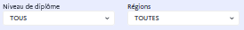
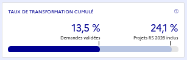
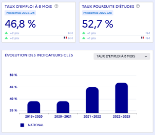
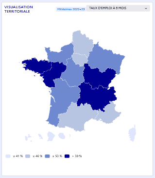
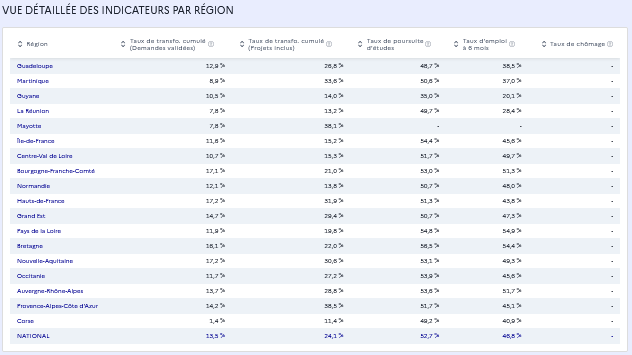

Suivi de l’impact
La page Suivi de l’Impact, destinée aux profils ayant un rôle de pilotage régional ou national, donne la perspective la plus macro sur la transformation de la carte prévue. Par défaut, elle donne une projection de la transformation à venir sur la base des demandes validées et de l’évolution des taux Inserjeunes à un niveau agrégé pour la France entière.
Remarque - Projection de transformation ≠ constat de rentrée⚓
Comme pour la page Pilotage, les données présentées dans cette page correspondent à des projections de transformation sur la base des demandes validées à l’issue de chaque campagne, et non aux données réellement mesurées dans le constat de rentrée (qui sont affichées par exemple dans la section « Console »).
Filtres⚓

On peut filtrer par
niveau de diplômeou parrégion(s).Remarque - Disponibilité du niveau de diplôme⚓
Attention, certains niveaux de diplômes ne sont pas disponibles, n’ayant pas de données d’effectifs isolables au dénominateur pour calculer un taux de transformation (ex : DNMADE, FCIL,…). Ces diplômes sont néanmoins pris en compte dans le taux global affiché par défaut. (« TOUS » dans le filtre niveau de diplôme).
Taux de transformation cumulé⚓

Cet encadré présente le taux de transformation prévu, cumulé depuis 2023 et la part supplémentaire attendue sur les projets de la campagne en cours.
Il s’agit bien de la transformation prévue à l’issue de chaque cycle de concertation, et non de la transformation mesurée par le constat de rentrée.
Remarque - Mode de calcul⚓
Cliquer sur le pictogramme « ? » en haut à droite du taux de transformation cumulé pour comprendre son mode de calcul.
Évolution des taux InserJeunes⚓

Cet encadré donne l’évolution des taux InserJeunes (taux d'emploi à 6 mois, taux de poursuite d'études) sur les derniers millésimes.
Visualisation territoriale⚓

Une comparaison par région de ces indicateurs est disponible sur la carte. Le filtre en haut à droite de la carte permet de visualiser un
autre indicateur.Vue détaillée des indicateurs par région⚓

Cette table donne le jeu de données exhaustif.